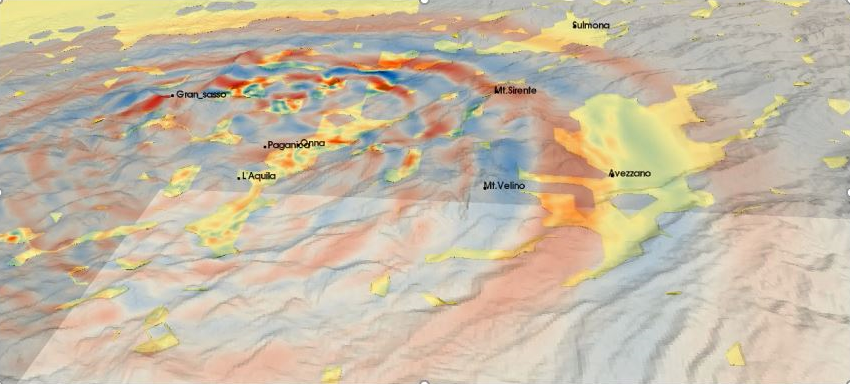

The VERCE portal – a user’s guide¶

Version 2.1, April 2018
Contributors¶
The VERCE project was funded by the EU as an EU infrastructure project, involving a wide range of institutions from across the EU.


{kind=link}
{kind=link}
{kind=link}
{kind=link}
{kind=link}
The following individuals have contributed material to this guide
T. Garth, F. Magnoni, R. Saleh, A. Spinuso, E. Casarotti, A. Gemund, S. Hoon Leong, J. Holt, L. Krishner, A. Kraus, R. Filgueira, M. Aktinson, H. Igel, A. Rietbrock
Table of Contents¶
- 1. Introduction to the VERCE platform
- 2. Introduction to full waveform modeling
- 3. Registering for the platform and certification
- 4. A tour of the VERCE platform
- 5. A SPECFEM3D_Cartesian simulation example
- 6. A SPECFEM3D_GLOBE simulation example
- 7. Processing and Accessing the Results
- 8. Running SPECFEM3D_Cartesian simulations using your own data
- VERCE glossary
- Appendix 1 – SPECFEM3D_Cartesian’s Flags
- Appendix 2 – SPECFEM3D_GLOBE’s Flags
- Appendix 3 – Using ObsPy
- Appendix 4 – using dispel4py